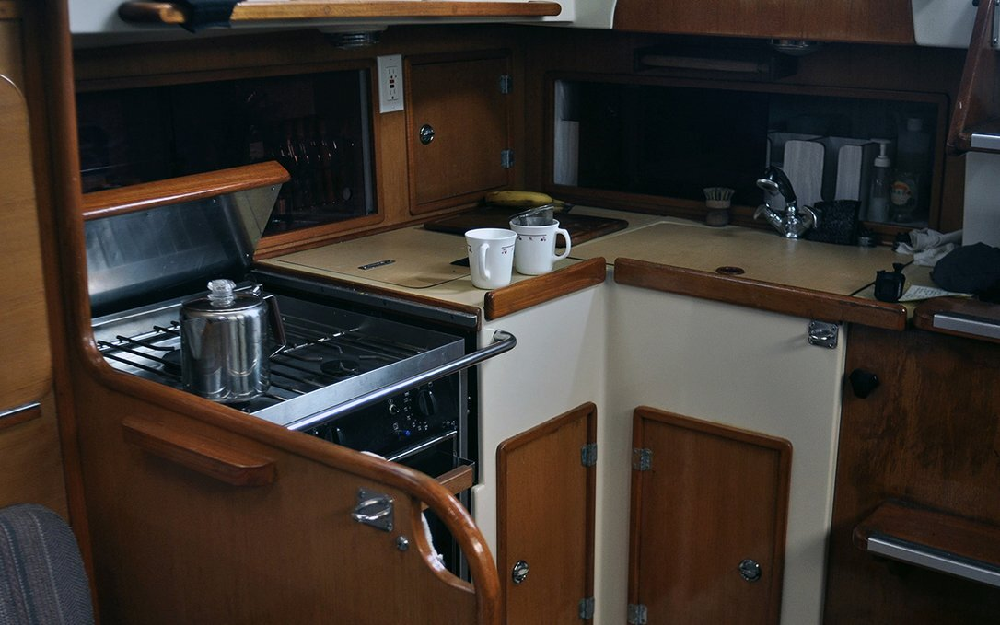
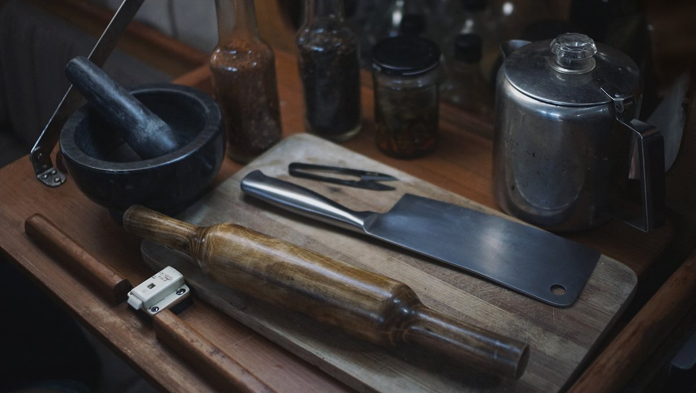

cooking
- a floating kitchen
- our galley
- Our kitchen tools
- what do we eat
- nutrition
- no refrigeration
- washing fresh produce
- lacto-fermentation
- growing food
- processing food
- storing food
- our cooking blog
- why plants
a floating kitchen

The doctor of the future will give no medicine, but will instruct his patient in the care of the human frame in diet and in the cause and prevention of diseases.
— Thomas Edison, 1903
Cooking is another creative outlet, not unlike drawing or writing. We find joy in it. It's an activity that we can do together which we believe is essential for well-being.
our galley
Our galley is small, but has enough room for two people to cook. We have a 3-burner gimballed stove, equipped with a large oven. Since Pino has no refrigeration, we go out shopping for fresh food almost everyday. During long passages, we rely on dehydrated goods, sprouted grains, microgreens, root vegetables and dried legumes.
We choose durable(stainless steel, quality wood), multi-functional and simple (unibody, non-electric) tools.
kitchen tools
Choose quality tools that don't require electricity, that have few components(like unibody knives) and made of materials that will last – or that can be composted. Ideal materials include glass, wood, cast iron and stainless steel. For cooking, we have:
- Bamboo Spatula
- Cast-iron pan
- Cast-iron pot
- Stainless steel pot
- Medium-sized marble mortar and pestle
- Stainless steel unibody vegetable cleaver
- Stainless steel unibody serrated knife
- Stainless steel julienne slicer
- Stainless steel Measuring cups
- Large stainless steel bread making bowl
- Stainless steel stovetop pressure cooker
- Unibody wooden rolling pin
- Potato masher
- Metal mesh grater
- Aluminum Spätzle press
- Spong Grinder No 20 (aka meat grinder)
what do we eat

People are fed by the food industry, which pays no attention to health, and are treated by the health industry, which pays no attention to food. — Wendell Berry
Our diet consists solely of plants (legumes, fruits, grains, seeds, vegetables etc). The content of our meals depend on the season and our location. We look at the adaptation and adoption of local produce as an exercise in creativity. Most processed food will come thickly packaged, and so to limit our waste we tend to avoid them.
Below is a list of rules that we go by, when it comes to choosing what to eat:
- 1. Eat varied foods. Biodiversity in the diet means less monoculture in the fields.
- 2. Pay more. Spend more for foods grown or raised less intensively and with more care, eat less.
- 3. Eat mostly plants. Especially leafy greens. Cook, and if you can, plant a garden.
- 4. Avoid processed foods.
- 5. Eat local seasonal ingredients. It's cheaper, and better for the planet.
nutrition
Following a plant-based diet while traveling is possible. Planning provisions ahead is important, a lot of the places may not have specialty items. Nutritional yeast, miso, dried legumes, quality wholegrain flour, flax seeds and B12 supplements, are especially hard to find.
Buying a large supply of shelf-stable tofu is always a good idea; it's a product that is high in protein and low in calories, that can be used to make sauces and sautees, while providing calcium (makes sure it has calcium sulfate or calcium chloride in the ingredients list). For iodine, carry iodized salt, or seaweed (wakame or nori). Other essentials, like omega 6 (LA, linoleic acid), can be found in pumpkin seeds, sunflower seeds for instance, omega 3 (ALA, alpha-linoleic acid) can be found in linseed and chia seeds (about 1 tbsp a day).
Staples like nut milks and oats are found everywhere, varying in price and quality. There will always be fresh vegetables available, but the selection can be poor at times. Carrying cans and and dried version of those foods can help, for example: canned and dried potatoes. Canned spinach may not be appealing, but in a place where there are no leafy greens available, it's better than not having any at all. Canned is not ideal, because it has a lot of added ingredients like salt and sugar, but if you plan in advance you can buy brands that have little additives.
Eating frozen, can help in a bind, a lot of frozen vegetables don't lose their nutrients, like Brocoli for instance. Most places will carry frozen goods, and it's generally cheaper than buying the same item fresh. If like us, you lack a fridge, get a bag with insulation or a cooler and keep it in there with other frozen goods. It won't keep forever, but it helps to slow the thawing process.
no refrigeration
Refrigeration is a modern convenience we choose to do without, we prefer to limit the use of energy-guzzling devices and to educate ourselves on proper storage of ingredients. We try as much as possible to pick produce without defects or bruises, and that have not previously been refrigerated.
We look at our inventory of fresh foods daily, and eat items with a shorter shelf life first, like fresh herbs and greens. Then, we move on to tomatoes, eggplants, and onto carrots and beets. In the end, we're usually left with onions, garlic, cabbage, potatoes and pumpkins. Potatoes and onions will last months if kept in a dark dry place, and some fruit will last a while if wrapped in towels, foil or newspapers. Most condiments like vinegar, soy sauce, mustard and peanut butter do well in cupboards. Molasses, maple syrup and jam will also keep for many weeks.
Relying solely on the selection of local and seasonal produce from farmer's markets makes us discover new ingredients, while it encourages local vendors, and cuts down on emissions from transport. Alternatively, making preserves and pickles allows us to enjoy some foods out of their season. In New Zealand, a friend once gave us feijoas that we processed into chutney which we had the following season.
Leftovers we eat the next day, incorporating it into other meals to offer some variety. Preparing food in the pressure cooker, and letting it rest unopened will help preserve the food. If left overnight, it can be reheated in the morning and will keep well until lunchtime.
washing fresh produce

After buying fresh produce at the market, I wash everything with baking soda. If there's a lot of dirt, I scrub them with a brush. The mechanical rubbing action and rinsing is very good at removing contaminants. Then finally, I rinse them off with fresh running water and let them dry in the sun. They need to be completely dry, otherwise they may rot faster (moisture accelerates rot).
Washing your produce in baking soda prevents foodborne illness and substantially reduces your exposure to pesticides, it is more effective than using a vinegar solution (because it needs to be used full-strength, and that can get expensive). This washing technique is the same for fresh greens and fruits, although for berries, it is best to wash them right before you plan to eat them.
lacto-fermentation
We preserve food whenever possible. Preserving food by lacto-fermentation keeps vitamins intact, and in some vegetables, increases its nutritional value. Fermentation also improves the immune system, and digestibility of the food, making them easier for our systems to assimilate.
"You don’t need to be an expert to preserve food, or any fancy technology. Just a container, some salt, and trust in the world of bacteria and fungi."
— A. Vansintjan, 2017.
Lacto-fermentation is easy to do, requiring only fresh vegetables, salt, water and air-tight containers. All vegetables can be fermented. Microbial activity occurs which secrete lactic acid, co2 and a variety of enzymes. Lactic acid inhibits the growth of bad bacteria. The mixture eventually achieves a state of balance, and fermentation stops. Conserving vegetables this way can last many years, even when stored at room temperature.
Lacto-fermentation is very safe, the PH of the mixture is so low (below 5) that no pathogens can survive. If ever a fermentation goes wrong, you'll smell it, and it'll be easy to spot, this makes accidentally eating a bad lacto-fermented product very difficult.
We make sauerkraut, and other pickled vegetables (carrots, beet root, garlic etc). We use the dry-salt method. The dry-salting method requires that vegetables be chopped or shredded, for only with lots of surface area exposed can the salt pull water out of the vegetables.
We recommended 3 tablespoons of salt (we use pickling salt, not iodized) per 5 pounds/2.3 kg of vegetables. Salt essentially slows fermentation and enzyme activity and thereby prolongs preservation potential. Temperature also impacts upon the speed of fermentation (fermentation occur faster in summer than winter). If we preserve vegetables with the goal of eating them much later, we add more salt, if the goal is to eat it as soon as it's ready, we use less.
For more about fermentation, we recommend the book The Art of Fermentation by Sandor Ellix Katz, and the blog Nicrunicuit(french) by Marie-Claire Frédéric.
growing food

Growing food aboard is possible. Sprouting seeds is a good way to transform dried foods into fresh foods, sprouting reduces anti-nutritional compounds in raw legumes making more of their nutrients available. Microgreens are germinated legumes grown up to 10cm, microgreens contain considerably higher levels of vitamins and carotenoids, about five times greater than their mature plant counterparts.
Sprouting offers a constant, and reliable supply of fresh and healthful food. Dry seeds keep a long time, and take up little space. Sprouting is also a good way to cut down on cooking time, thusly saving fuel.
On the boat, we grow lentils sprouts and fenugreek microgreens. To learn more about growing food aboard a sailboat, we recommend reading Ken Neumeyer's Sailing The Farm, and this Sprouting Guide.
Sprouting lentils

- Soak 1/3 cup of lentils overnight.
- Move into an upside-down jar covered with a mesh to drain water.
- Rinse every morning, enjoy fresh greens daily.
processing food
We have one of these old fashioned food processors on board. We first decided to get one to process peanuts into peanut butter.
We have since found that it makes excellent soy milk, and hummus.

storing food
We like to use 10 L plastics bins designed for drinking water to store large quantities of grains and other dried goods, like legumes and rice. Food-grade plastics are identified by the recycling number on the bottom. 1, 2, 4 and 5 are food-grade, but also to check to see if they are “food-safe”. Food-grade plastics are very stable and won’t degrade in sunlight, but they may have been treated with a dye that compromises the bucket and could leach into your stored food or water.

We also carry 4 L jars for other items, as well as 1 L ones. We also use 1 gallons carboys to store grains.
To prevent bug infestations in large quantities of grains, use dry ice. Foods to buy in bulk include anything that might attract weevils, including: Flours, cereal, rice, quinoa, pasta, oats, barley, corn and wheatberries.
our cooking blog

Grimgrains is our cooking blog. It showcases our favourite creations, along with hand-drawn illustrations for each ingredient.
We started Grimgrains to teach ourselves how to cook. This blog — which now doubles as a travel diary — helps measure our progress. It's also a way to share what we've learned.
why plants
We eat a plant-based diet for health, ethical and environmental reasons.
Appropriately planned plant-based diets are healthful, nutritionally adequate, and may provide health benefits in the prevention and treatment of certain diseases.